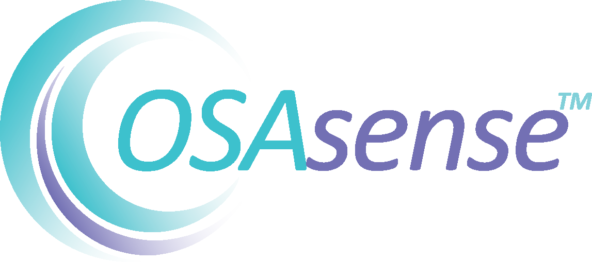

My Experience
I have been programming for a little over 8 years. It started with Minecraft mods in Java, and little Java games.
Soon after I started a study in game-development at ROC van Twente. After that most my time went to working with C# and Unity3D and a little with Unreal Engine 4.
I have made a lot of cool projects over the years that I feel like have given me a broad view of what the Unity engine is capable of.
For example, I have worked on simple 2D platformers, but also intricate 2D platformers with multiplayer support.
In the 3D section I have worked on simple puzzle games, endless runners, but also full recreations of bigger games or their mechanics,
like Attack on Titan 2 or Fatal Frame.
Work/Internships
|  | Osasense is my primare place of work. We make applications and gadgets for doctors. This is a really fun place to work. |
I have made both projects for Loadstar as a job and as internship. It was a app where you can swim around as a fish and try to make it from point a to point b without dying. It feels great having went through the process of actually publishing an app. |
|
I had a internship at Game Lab Oost where we made a driving test helper app for people and another app for people with dementia. I learned a lot here about making serious games. |
|
My internship with Breathe Media was together with Game Lab Oost |